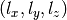

orbkit can be easily operated via the terminal or within a Python program. For advanced users, the latter type of usage is recommended.
orbkit requires Cartesian Harmonic Gaussian basis sets. Unless otherwise stated, it assumes the standard molden basis function order for the exponents :
Molden File Format:
GAMESS-US Output File:
GAUSSIAN Formatted Checkpoint File:
$ formchk chkpt-file formatted-file
GAUSSIAN .log File:
6D 10F gfinput IOP(6/7=3)
For an overview of all available features, a general help text can be called in the terminal by using the command:
$ orbkit -h
orbkit creates an logfile (.oklog) containing all information printed during the calculation.
For the standard density calculation including all occupied molecular orbitals on the default grid, the following command must be entered in the console:
$ orbkit -i INPUT --itype=ITYPE -o OUTPUTNAME --otype=OTYPE
The only option required by orbkit is the definition of the input file with -i INPUT. Unless otherwise stated, orbkit assumes --itype=molden and --otype=h5. For the -o OUTPUTNAME, it assumes the base name of INPUT. The file extension of the output will be automatically extended by the program. In order to produce different output types within one run, multiple calls of the option --otype=OTYPE are possible. You can choose between standard Gaussian cube files (--otype=cb), HDF5 files (--otype=h5) or ZIBAmira Mesh files (--otype=am). Additionally, orbkit can directly create a ready to use ZIBAmira network for the easy depiction in ZIBAmira (--otype=hx). This network is based on a ZIBAmira Mesh file and includes a simple color map adapted to the system.
The Gaussian cube file (file extension: .cb) is a normal text file containing the important informations of the calculation. For large systems, the cube file requires a lot of space on the hard drive and is very time-consuming.
In contrast, the HDF5 file format (file extension: .h5) which is a hierarchical data format can store and organize large amounts of numerical data. More informations about this file format can be found at:
Another advantage of this file format is the easy readability with Matlab, Python and many other languages. Example files for loading HDF5 files via Matlab or Python are available in the program package. With the JAVA program, HDFVIEW, the user can easily load and read the HDF5 files.
The last available data format are the ZIBAmira Files. Those can be directly loaded in ZIBAmira.
One special capability of orbkit is the computation of the density with a selected set of molecular orbitals. This can be invoked by providing an MO_SET:
$ orbkit -i INPUT --mo_set=MO_SET
Such an MO_SET is a plain text file, where every row signifies a new calculation of the density from the molecular orbitals specified in this row.
The molecular orbitals can be selected either via their index (As given in the output file, i.e., starting from one.)
1 2 3
or by using the MOLPRO-like nomenclature, e.g., 3.1 for the third orbital in symmetry one. (For Gaussian and Gamess-US, the symmetry labels are used, e.g., 3.A1 for the third orbital in symmetry A1.)
1.1 2.1 1.3
1.1 4.1
4.1 2.3 2.1
In the same manner, the computation and storage of a selected set of molecular orbitals can be accomplished by
$ orbkit -i INPUT --calc_mo=CALC_MO
Here, the density computation is omitted. The computation and storage of all molecular orbitals can be called by
$ orbkit -i INPUT --calc_mo=all_mo
orbkit can compute analytical spatial derivatives with respect to x, y, and/or z for the atomic and molecular orbitals, as well as for the electron density. E.g., a derivative of the density with respect to x can be invoked as follows:
$ orbkit -i INPUT --drv=x
Multiple calls of the option --drv=DRV are possible.
In the following, two additional features are highlighted. On the one hand, the atom-projected electron density
$ orbkit -i INPUT --atom_projected_density=INDEX
which is the integrand of the Mulliken charges, and on the other hand, the molecular orbital transition electronic flux density (components x, y, and z) between the orbitals I and J:
$ orbkit -i INPUT --mo_tefd=I J --drv=x --drv=y --drv=z
The following examples show exemplary how to use orbkit within your Python programs. These and more examples can be found in the orbkit/examples folder. Please refer to the function references to get information about all modules and functions available.
# -*- coding: iso-8859-1 -*-
'''
This file is part of orbkit. See the main program or documentation
for information on the license.
Example file that shows how to use the orbkit main function to
calculate electron densities.
'''
# import the functions of orbkit (import function
# ok that imports all other functions)
from orbkit import ok
#---- first scenario ----
'''
Calculate the electron density with 4 parallel subprocesses
on a user-defined grid, save data to a HDF5 file and print
number of electrons
'''
print('\n \n First scenario: calculate electron density. \n \n')
in_fid = 'h2o.md'
out_fid = 'h2o_r1'
# initialize orbkit with default parameters and options
ok.main.init()
# set some options
ok.grid.N_ = [ 201, 201, 101] # grid points (regular grid)
ok.grid.max_ = [ 10.0, 10.0, 5.0] # maximum grid value
ok.grid.min_ = [-10.0, -10.0, -5.0] # minimum grid value
ok.options.filename = in_fid # input file name
ok.options.itype = 'molden' # input file type [default]
ok.options.outputname = out_fid # output file (base) name
ok.options.otype = 'h5' # output file type [default]
ok.options.numproc = 4 # number of processes
# run orbkit
ok.main.main()
import numpy as np
print('We have %.3f electrons.' % (np.sum(ok.main.rho)*ok.grid.d3r))
#---- Second scenario ----
'''
Calculate the density and its x- and z-derivative using some orbitals
defined in an external file (by symmetry notation), read the grid from a file,
and save the data to cube and HDF5 files.
Note that for the derivatives, there will be one cube file per MO per direction,
while there will only be one HDF5 file containing information of all MOs per
direction.
Ommit the creation of the *.oklog file
'''
print('\n \n Second scenario: calculate derivatives of electron density. \n \n')
in_fid = 'h2o.md'
out_fid = 'h2o_r2'
# initialize orbkit with default parameters and options
ok.main.init()
# set some options
ok.options.grid_file = 'grid_reg.txt' # grid file to read from (regular grid)
ok.options.filename = in_fid # input file name
ok.options.itype = 'molden' # input file type [default]
ok.options.outputname = out_fid # output file (base) name
ok.options.otype = ['h5', 'cb'] # output file types
ok.options.calc_mo = './MO_List.tab' # list of MOs (Molpro notation)
ok.options.drv = ['x', 'z'] # derivatives along x and z
ok.options.no_log = True # do not write log this time
# run orbkit
ok.main.main()
#---- third scenario ----
'''
Create an ZIBAmira Network from the density caclulated of MOs
selected by their number in the molden file
'''
print('\n \n Third scenario: calculate electron density for Amira. \n \n')
in_fid = 'h2o.md'
out_fid = 'h2o_r3'
# initialize orbkit with default parameters and options
ok.main.init()
# set some options
ok.options.otype = ['am', 'hx'] # output file types
ok.options.mo_list = './MO_List_int.tab' # list of MOs (Molden enumeration)
ok.options.filename = in_fid
ok.options.outputname = out_fid
# run orbkit
ok.main.main()
# -*- coding: iso-8859-1 -*-
'''
This file is part of orbkit. See the main program or documentation
for information on the license.
Example file that shows how orbkit can be used as a module. Functions
of orbkit are used to read a molden file and to calculate a single
molecular orbital. Finally, show cuts of the orbital in the xy-,
xz- and yz-plane using matplotlib.
If mayavi2 is installed, you may set the variable mayavi_yes = True
to see an isosurface plot of the orbital.
'''
mayavi_yes = False
# import the functions of orbkit (import function
# ok that imports all other functions)
from orbkit import ok
# name and type of input file
fid_in = 'h2o.md'
itype = 'molden'
# number of subprocesses
numproc = 4
# set grid parameters
ok.grid.N_ = [ 50, 52, 54]
ok.grid.max_ = [ 6.5, 6.5, 6.5]
ok.grid.min_ = [-6.5, -6.5, -6.5]
# define variable to store quantum chemical information
qc = ok.QCinfo()
# open molden file and read parameters
qc = ok.read.main_read(fid_in,itype=itype)
# initialize grid
ok.grid.grid_init()
# print grid information
print(ok.grid.get_grid())
# define the molecular orbital to be calculated
selected_MO = ['3.1']
# get only the information of selected MO
Selected_mo_spec = []
for k in range(len(qc.mo_spec)):
if qc.mo_spec[k]['sym'] in selected_MO:
Selected_mo_spec.append(qc.mo_spec[k])
# calculate MO
mo_list = ok.core.rho_compute(qc.geo_spec,qc.ao_spec,
Selected_mo_spec,calc_mo=True,numproc=numproc)
# plot the results
x = ok.grid.x
y = ok.grid.y
z = ok.grid.z
# if selected, use mayavi2 to make isosurface plot
if mayavi_yes == True:
from enthought.mayavi import mlab
src = mlab.pipeline.scalar_field(mo_list[0])
mlab.pipeline.iso_surface(\
src, contours=[0.001, ], opacity=0.3, color=(0, 0, 0.8))
mlab.pipeline.iso_surface(\
src, contours=[-0.001, ], opacity=0.3, color=(0.8, 0, 0))
mlab.show()
# use matplotlib to show cuts of the molecular orbitals
import matplotlib.pyplot as plt
import numpy as np
# select cuts
xd = mo_list[0][ok.grid.N_[0]/2-1,:,:]
yd = mo_list[0][:,ok.grid.N_[1]/2-1,:]
zd = mo_list[0][:,:,ok.grid.N_[2]/2-1]
# plot cuts
f, (pic1, pic2, pic3) = \
plt.subplots(3,1,sharex=True,sharey=True,figsize=(6,14))
pic1.contour(z,y,xd,50,linewidths=0.5,colors='k')
pic1.contourf(\
z,y,xd,50,cmap=plt.cm.rainbow,vmax=abs(xd).max(),vmin=-abs(xd).max())
pic1.set_xlabel('z')
pic1.set_ylabel('y')
pic2.contour(z,x,yd,50,linewidths=0.5,colors='k')
pic2.contourf(\
z,x,yd,50,cmap=plt.cm.rainbow,vmax=abs(yd).max(),vmin=-abs(yd).max())
pic2.set_xlabel('z')
pic2.set_ylabel('x')
pic3.contour(y,x,zd,50,linewidths=0.5,colors='k')
pic3.contourf(\
y,x,zd,50,cmap=plt.cm.rainbow,vmax=abs(zd).max(),vmin=-abs(zd).max())
pic3.set_xlabel('y')
pic3.set_ylabel('x')
# following options applied for all subplots as they share x- and y-axis
pic1.xaxis.set_ticks(np.arange(-5,6,5))
pic1.yaxis.set_ticks(np.arange(-5,6,5))
pic1.set_aspect('equal')
# plot
f.subplots_adjust(left=0.15,bottom=0.05,top=0.95,right=0.95)
f.show()
# -*- coding: iso-8859-1 -*-
'''
This file is part of orbkit. See the main program or documentation
for information on the license.
Example file that shows how orbkit can calculate gradients of
molecular orbitals. Also, a user defined grid in spherical
coordinates will be used for calculation.
If mayavi2 is installed, the vector field of the gradient of
one MO will be shown.
'''
import numpy as np
# import the functions of orbkit (import function
# ok that imports all other functions)
from orbkit import ok
# defining some grid in spherical coordinates
r = np.arange(0.1, 3., 0.2)
theta = np.arange(0, np.pi+0.1, np.pi/10.)
phi = np.arange(-np.pi, np.pi+0.1, np.pi/10.)
# initialize orbkit with default parameters and options
ok.main.init()
# Setting up a spherical grid -> also sets option for vector grid
ok.grid.sph2cart_vector(r,theta,phi)
ok.grid.is_initialized = True
# orbkit options
ok.options.filename = 'h2o.md' # input file name
ok.options.itype = 'molden' # input file type
ok.options.outputname = 'h2o_MO' # output file (base) name
ok.options.otype = 'h5' # output file type
ok.options.numproc = 1 # number of processes for multiprocessing
ok.options.vector = 4e4 # number of points per process
ok.options.calc_mo = 'MO_List.tab' # list of molecular orbitals to be used
# first run: do not calculate derivatives
ok.options.drv = None # do not calculate derivative
ok.options.no_output = True # we will create our own output
# run orbkit
mo_list,mo = ok.main.main()
# create output: molecular orbital data
ok.output.HDF5_creator(\
mo_list,ok.options.outputname,ok.main.qc.geo_info,ok.main.qc.geo_spec,
data_id='MO', # name of data set
append=None, # create new file [default]
data_only=False, # include grid, structure, and MO data [default]
is_mo_output=True,
mo_spec=mo['mo_spec'])
# second run: calculate derivatives
ok.options.drv = ['x', 'y', 'z'] # calculate derivatives along x, y and z
ok.options.no_output = True # we will create our own output
# run orbkit
delta_mo_list,mo = ok.main.main()
# append output: derivative data
ok.output.HDF5_creator(delta_mo_list,ok.options.outputname,None,None,
data_id='delta_MO', # name of data set
append='/', # where to append in file
data_only=True, # do not include grid, structure, and MO data
is_mo_output=False,
mo_spec=mo['mo_spec'])
# plot derivative
x = ok.grid.x
y = ok.grid.y
z = ok.grid.z
try:
from enthought.mayavi import mlab
mo_num = 3
mlab.quiver3d(x,y,z,delta_mo_list[0,mo_num,:],delta_mo_list[1,mo_num,:],\
delta_mo_list[2,mo_num,:],line_width=1.5,scale_factor=0.1)
mlab.show()
except ImportError:
print('ERROR!!! mayavi2 module is missing...')
print('\nYou need mayavi2 to plot the vector field.')
print('Load ' + ok.options.outputname + '.' + ok.options.otype + \
' to visualize data yourself.')
One limitation of orbkit is the ability to calculate only s, p, d, f and g atomic orbitals (Molden file limitation).
For the calculation of atomic and molecular orbitals, orbkit requires Cartesian Gaussians. The usage of spherical Gaussian functions is not yet implemented.